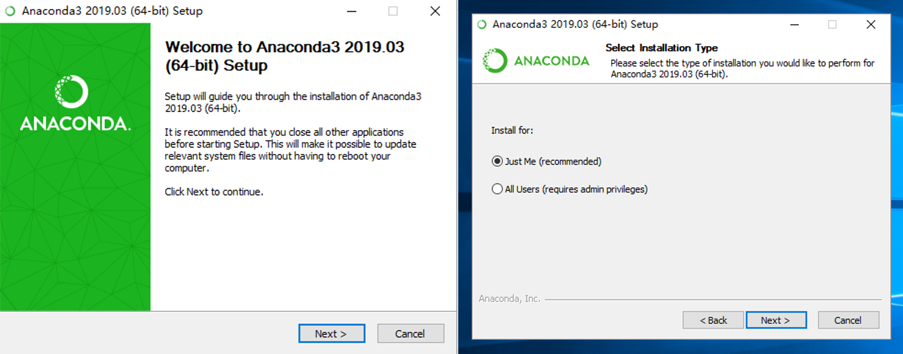
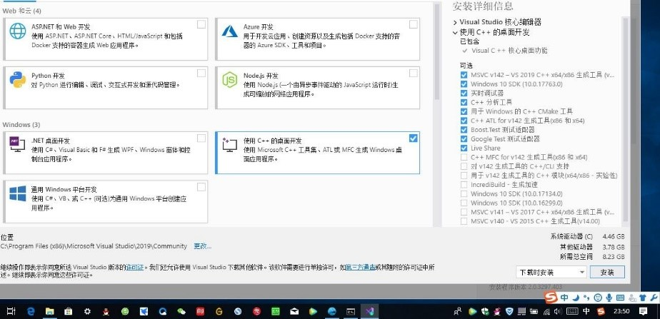

Common Problems and Solutions¶
Warning
Windows Installation Environment
python (It is recommended to use Anaconda to install python3.7.0 environment)
numpy (Numpy must be installed before installing ALKEMIE, otherwise the scripts related to the c language cannot be compiled)
Visual Studio 14++ (C and C++ compilation dependencies)
Linux Installation Environment
python (It is recommended to use Anaconda to install python3.7.0 environment)
numpy (Numpy must be installed before installing ALKEMIE, otherwise the scripts related to the c language cannot be compiled)
gcc (GCC) 4.4.7 20120313 (Red Hat 4.4.7-4)
Visual interface needs: glibc/2.16
InstallationPython¶
Download the Windows version of the Anaconda installation package at Anaconda
{kind=link}
After the download is complete, you need double-click the mouse to start the installer, keep the default option settings and follow the instructions to install. Only as an administrator can you choose to install by all users. Checking “Just Me” in general situation.
{kind=link}
Add environment variables after the installation is complete.
Right-click the computer icon on the desktop, and click Properties in the pop-up right-click menu to open the system settings.
Select Advanced System Settings-Environment Variables
Select Path in the system environment variable, click Edit
Create and add five environment variables
Warning
user_path represents the user-defined Anaconda installation location, the installation directory cannot have Chinese characters.
# Take the Anaconda3 version of 5.3 as an example
# user_path is the Anaconda installation location
user_path/Anaconda3-5.3
user_path/Anaconda3-5.3/Scripts
user_path/Anaconda3-5.3/Lib
user_path/Anaconda3-5.3/Library
user_path/Anaconda3-5.3/Library/bin

Add Tsinghua source mirror to conda and pip, refer to the specific method:
Enter the following command to configure pypi Tsinghua mirror
pip config set global.index-url https://pypi.tuna.tsinghua.edu.cn/simple
Enter the following command to configure conda Tsinghua mirror
conda config --add channels https://mirrors.tuna.tsinghua.edu.cn/anaconda/pkgs/free/
conda config --add channels https://mirrors.tuna.tsinghua.edu.cn/anaconda/pkgs/main/
conda config --set show_channel_urls yes
Warning
If you do not add the Tsinghua mirror source, there will be a dependency package fastTSNE-0.2.13.tar.gz that cannot be downloaded correctly. You can manually download the 0.2.13 version through the connection and install it through pip https://pypi.tuna.tsinghua.edu. cn/simple/fasttsne/
There is no fastTSNE package in conda image, and Tsinghua image of pip is required
Create a python3.7 enviroment
# Create a python3.7 environment in Anaconda
conda create --name env_name python==3.7
# Enter yes after retrieval and wait for the installation to complete
# Activate the python3.7 environment
conda activate env_name
Hint
For further Anaconda usage tutorials and creating python environment, refer to: https://zhuanlan.zhihu.com/p/94744929
Installation Visual Studio Installer¶

Download the Visual Studio 2019 installation package, download address: https://visualstudio.microsoft.com/zh-hans
Double-click the mouse to start the installation program, choose to use C++ desktop development, and install according to the default path
The installation process takes about half an hour. After the installation is complete, you must restart the computer according to the prompts
{kind=link}
Other Common Problems¶
Can not log in the ALKEMIE.
Solution：Please contact the administrator to obtain a license and register an account.
Unable to connect the remote database, and unable to submit tasks through remote server.
Solution：Currently, the ALKEMIE server is only deployed on the Beihang campus server and the Guangzhou Supercomputing Tianhe server. The off-campus connection to the Beihang campus server can only be accessed through EasyConnect VPN. To connect to the Tianhe supercomputer server, you need to have VPN access through HillStone software and have the permission of the Tianhe computing account. If you cannot connect, please contact the administrator. If you want to build your own server environment, the process is relatively complicated, so please contact the administrator.
Encountered the following error during pip install installation:

Solution：Please replace the pip mirror to Tsinghua source, because pip currently temporarily suspends support for the fastTSNE software package. For details, refer to step 3 in 2.2.
The conda installation process encountered the following warning:

- Solution：Add the conda path shown in the figure below to the environment variable.

Cannot start ALKEMIE software after running Alkemiems-akpad.

Solution：If you encounter this problem, it is because the conda environment variable is incorrect, just add the conda environment variable again.